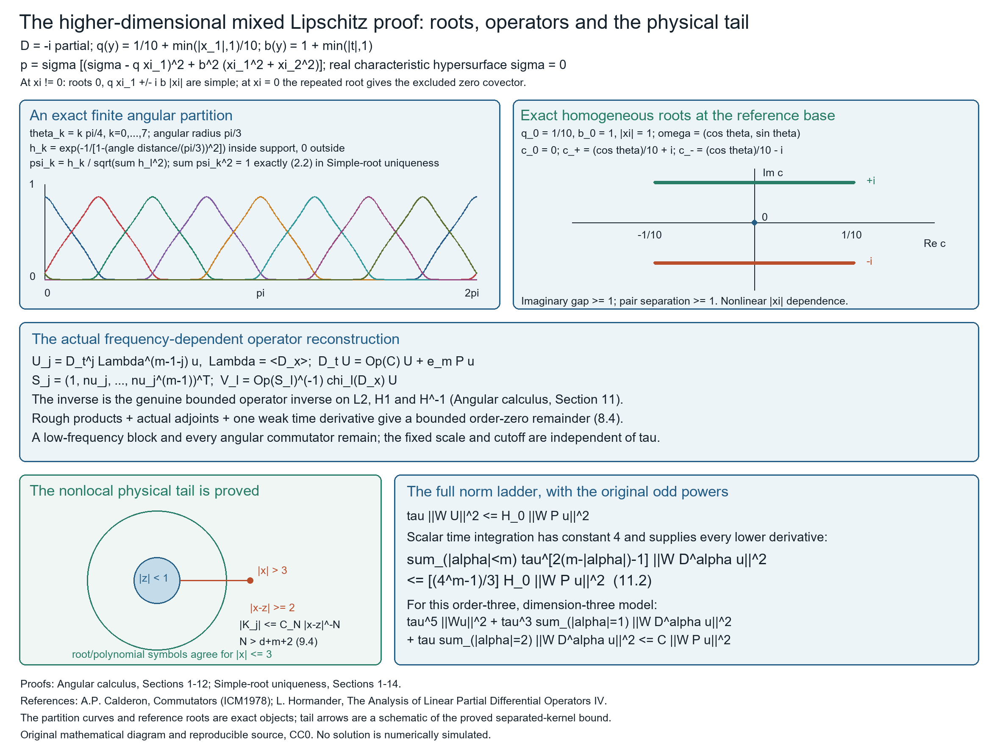

Angular calculus with Lipschitz coefficients
A Fourier multiplier and a variable coefficient do not commute. With a Lipschitz coefficient, their commutator still gains one Sobolev derivative. This lesson proves that fact with finite constants, then builds the products, Hilbert adjoints and genuine matrix operator inverses needed by a companion-system uniqueness proof.
We assume scalar Lebesgue integration, distributional differentiation, Fourier Plancherel and finite-dimensional calculus. Useful prerequisites are Fourier transforms, finite spectra and convex separation [F] and Local inverses and distance-weighted elliptic estimates [W]. Basic references are those open chapters and Calderón's open account [C] of the Coifman–Meyer bilinear route. The endpoint embedding and every operator estimate needed here are proved below. Simple-root uniqueness with Lipschitz principal coefficients applies the resulting calculus to an actual weak equation.
1. Conventions and finite bounds
An order-zero multiplier is bounded on \(L^2\) by Plancherel. A variable coefficient does not commute with it. We will measure that failure using only the first Lipschitz bound, then turn the commutator gain into products, adjoints and actual operator inverses. The inhomogeneous \(\lambda\) keeps zero frequency in every formula.
The transverse dimension is \(d\geq1\). Throughout \(D_j=-i\partial_j\), the scalar inner product is linear first, \(\widehat f(\xi)=\int e^{-ix\cdot\xi}f(x)\,dx\), and inversion is \((2\pi)^{-d}\int e^{ix\cdot\xi}\widehat f(\xi)\,d\xi\). Thus a bilinear multiplier is \[ B_m(f,g)(x)=(2\pi)^{-2d}\iint e^{ix\cdot(\xi+\eta)}m(\xi,\eta)\widehat f(\xi)\widehat g(\eta) \,d\xi\,d\eta .\tag{1.1} \] For a separated multiplier \(m=p(\xi)q(\eta)\), this is exactly \(p(D)f\,q(D)g\). No new Fourier normalization occurs. Vector/matrix estimates below use the finite original component Euclidean norm.
Write \(\lambda(\xi)=\langle\xi\rangle=(1+|\xi|^2)^{1/2}\), \(\Lambda=\lambda(D)\), and \[ M_N(a)=\max_{|\alpha|\leq N}\sup_\xi \langle\xi\rangle^{|\alpha|}|\partial^\alpha_\xi a(\xi)|. \tag{1.2} \] All cutoffs are fixed smooth functions before any Carleman parameter. The following choices are sufficient, without claiming minimal regularity: \[ N_{\rm CM}=8d+20,\quad N_a=N_{\rm CM}+1,\quad N_{\rm ang}=2N_a+2d+6 .\tag{1.3} \] Even derivative orders can be increased to the next even integer. Every constant below is a finite function of these orders, dimension, fixed cutoff/profile derivatives, and the displayed amplitude/Lipschitz bounds. The simple-root argument in the following lesson provides every fixed finite frequency order used in its application. The base hypotheses require only first Lipschitz bounds.
2. The only maximal-function estimate used
The maximal function converts a bound on local averages into an \(L^2\) estimate. Its role here is precise: it controls a smoothed test function simultaneously at the height and location of each frequency band.
Let \(Mf(x)\) be the supremum of averages of \(|f|\) on balls centered at \(x\). For \(f\in L^1\), the finite greedy ball argument gives \[ |\{Mf>s\}|\leq5^d s^{-1}\|f\|_1 .\tag{2.1} \] For completeness, cover a compact subset of that open level set by finitely many witnessing balls. Choose a ball of largest radius, delete balls meeting it, and repeat. The chosen balls are disjoint; each deleted ball is contained in the fivefold enlargement of its chosen ball. Therefore the measure of the compact set is at most \(5^d\sum|B|\leq5^d s^{-1}\int|f|\). Exhaust the level set by compact subsets, using regularity of completed Lebesgue measure. Truncating radii and then exhausting proves the same assertion without a finite-family restriction. Centered ball integrals are continuous under translation for locally integrable \(f\), by local \(L^1\) translation continuity, so the level set is open.
For \(f\in L^2\), decompose at level \(s/2\). The bounded part has maximal function at most \(s/2\), and the remaining part is in \(L^1\). (2.1) and Tonelli then give \[ \|Mf\|_2^2 \leq4\,5^d\int_0^\infty\int_{\{|f|>s/2\}}|f(x)|\,dx\,ds =8\,5^d\|f\|_2^2 .\tag{2.2} \] These arguments apply to complex inputs via their modulus. They use no additional singular-integral theorem.
3. Bandpass square sums and the complete Carleson bound
A bandpass kernel has no zero-frequency component. For an \(L^2\) input, different bands have a square-sum bound. For a bounded input, the same bands produce a measure with bounded mass above every spatial cube. These are the two sides of the endpoint argument.
For a fixed smooth compact frequency profile \(\Phi\), supported in \(a\leq|\xi|\leq b\), \(0<a<b<\infty\), let \[ \phi=\mathcal F^{-1}\Phi,\quad t_j=2^{-j},\quad \phi_j(x)=t_j^{-d}\phi(x/t_j). \] The original Plancherel identity implies \[ \sum_j\|\phi_j*f\|_2^2 \leq A_\Phi\|f\|_2^2,\qquad A_\Phi=\sup_{\xi\ne0}\sum_j|\Phi(t_j\xi)|^2<\infty . \tag{3.1} \] The sum has finitely many overlapping nonzero terms at each \(\xi\); the factors \((2\pi)^{-d}\) cancel exactly against the original \(L^2\) identity. The same statement holds for a subset of the scales.
For \(g\in L^\infty\), define the positive measure \[ d\mu_g(x,t)=\sum_j|\phi_j*g(x)|^2\,dx\,\delta_{t_j}(dt). \] For every cube \(Q\) of side \(\ell\), \[ \mu_g(Q\times(0,\ell])\leq C_\Phi\|g\|_\infty^2|Q| .\tag{3.2} \] Here is the whole argument. Split \(g=g_1+g_2\), where \(g_1\) is supported in the concentric cube \(Q^*\) of side \(4\sqrt d\,\ell\), and \(g_2\) is its complement. (3.1) bounds the contribution of \(g_1\) by \(2A_\Phi\|g\|_\infty^2|Q^*|\). For \(x\in Q\), points in the support of \(g_2\) have distance at least \(\ell\) from \(x\). The finite Schwartz bound of the inverse Fourier profile gives \[ |\phi_j*g_2(x)|\leq C_\Phi\|g\|_\infty(t_j/\ell)\quad(t_j\leq\ell). \] Indeed integrate \(t_j^{-d}(1+|z|/t_j)^{-d-1}\) over \(|z|\geq\ell\). Sum the squared ratios, a geometric series, and multiply by \(|Q|\). This proves (3.2), with no endpoint strong mollifier assertion.
4. The discrete embedding step
The embedding below combines that cube-mass condition with the maximal function. The measure has discrete heights, so we prove the needed version directly. Spatial absolute continuity is essential when we discard dyadic boundaries.
Suppose a positive measure \(\mu\), absolutely continuous in its spatial variable on the discrete heights \(t_j\), satisfies \(\mu(Q\times(0,\ell(Q)])\leq A|Q|\). For any fixed Schwartz convolution profile \(\psi\), write \(\psi_j(x)=t_j^{-d}\psi(x/t_j)\). Annular summation of its kernel gives \[ |\psi_j*h(x)|\leq C_\psi \inf_{|y-x|\leq t_j} Mh(y).\tag{4.1} \] For each annulus use a ball centered at \(y\) with radius comparable to that annulus radius. The kernel decay of order \(d+1\) makes the resulting geometric sum finite.
If \(|\psi_j*h(x)|>s\), the ball \(B(x,t_j)\) lies in the open finite-measure set \(E_s=\{Mh>s/C_\psi\}\). Take an ordinary dyadic cube containing \(x\), with side between \(t_j/(4\sqrt d)\) and \(t_j/(2\sqrt d)\); it lies in that ball. It is contained in a maximal dyadic cube \(Q\subset E_s\). Such a maximal cube exists since \(E_s\) has finite measure by (2.2). Its side is at least the chosen cube side, so \(t_j\leq4\sqrt d\,\ell(Q)\). The maximal cubes are disjoint and cover \(E_s\) apart from the dyadic boundaries. These boundaries have zero spatial measure and hence zero \(\mu\) measure in this setting.
Use a concentric enlargement of each \(Q\) to apply the Carleson bound with height \(4\sqrt d\,\ell(Q)\). Consequently \[ \mu\{|\psi_j*h(x)|>s\}\leq C_d A|E_s|. \] Integrating \(2s\,ds\), applying (2.2), and using Tonelli proves \[ \int|\psi_j*h(x)|^2\,d\mu(x,t_j) \leq C_{d,\psi}A\|h\|_2^2 .\tag{4.2} \] Every use of this result below has exactly the spatial absolute continuity just specified.
5. Complete discrete bilinear paraproduct bound
Products of two comparable high frequencies can produce a low output frequency. We therefore localize the test function on the actual output support. When one input is much lower, the output is annular; changing that test localizer gives the other two cases.
Let \(\Phi_1,\Phi_2\) be fixed smooth compact frequency profiles with at least one vanishing near zero. For any bounded scalar sequence \(m_j\), finite partial sums \[ G=\sum_j m_j(\phi_{1,j}*f)(\phi_{2,j}*g) \] satisfy \[ \|G\|_2\leq C\sup_j|m_j|\,\|f\|_2\|g\|_\infty .\tag{5.1} \] When both profiles are bandpass, insert on the product an even real smooth low-frequency multiplier \(\Psi(t_jD)\), equal to one on the product's frequency support. Pair with \(h\in L^2\). Cauchy–Schwarz in \((x,j)\) bounds the pairing by the product of the square sum for the \(f\) factor ((3.1)) and \[ \left(\sum_j\int|\psi_j*h|^2|\phi_{2,j}*g|^2\right)^{1/2}, \] which is bounded by (3.2)–(4.2).
If the \(f\) profile is low and the \(g\) profile bandpass, split the low profile into a part supported below one quarter the lower radius of the bandpass and a bandpass part. The latter was handled. The former's product has an annular output; choose \(\Psi\) bandpass on that output. Now (3.1) applies to the \(h\) factor, while (3.2)–(4.2) apply to the low \(f\) factor against the \(g\) measure. If the \(f\) profile is bandpass and \(g\) low, the same splitting leaves an annular output; use (3.1) on both \(f\) and \(h\) and the elementary bound \(\|\phi_{2,j}*g\|_\infty\leq\|\phi_2\|_1\|g\|_\infty\). These are all cases.
The proof is uniform in partial sums and in signs/complex values of \(m_j\). If profiles are multiplied by \(e^{ik\cdot\xi}\), their kernels translate. The preceding finite Schwartz estimates grow at most \[ C(1+|k|)^{2d+4}(1+|l|)^{2d+4}.\tag{5.2} \] One can use the weight of order \(2d+4\) in each translated kernel bound; no sharp translation exponent is needed.
6. Bilinear multiplier theorem with a finite norm
A general smooth joint multiplier can be expanded into separated frequency modes on each annulus. The preceding paraproduct estimate controls each mode. Finite derivative orders make their translation costs summable.
For a smooth joint multiplier \(m(\xi,\eta)\) on \(\mathbb R^{2d}\), assume \[ \max_{|\gamma|\leq N_{\rm CM}}\sup_{\xi,\eta} \langle(\xi,\eta)\rangle^{|\gamma|} |\partial^\gamma m(\xi,\eta)|\leq M. \] Then \[ \|B_m(f,g)\|_2\leq C_d M\|f\|_2\|g\|_\infty .\tag{6.1} \] Here is the finite decomposition. Resolve joint frequency into one compact low block and dyadic annuli \(j\geq1\) with fixed smooth cutoffs. On each annulus, a fixed two-sector smooth partition puts one input frequency away from zero. Choose product profiles equal to one on the corresponding sector support: one is bandpass, the other compact. After rescaling, extend the sector multiplier by zero in a fixed large cube and periodically. Its Fourier coefficients \(c_{j,k,l}\) satisfy \[ |c_{j,k,l}|\leq C_d M(1+|k|+|l|)^{-N_{\rm CM}}, \] by integration by parts with a finite power of \(1-\Delta\). Its Fourier series converges absolutely, uniformly, and reproduces the multiplier; the product profiles cut it off inside that cube. Each mode is a sum of the operators satisfying (5.1), with the bounded scale sequence \(c_{j,k,l}\) and translated input profiles. (5.2) and \(N_{\rm CM}>2d+4d+8\) make the sum of their operator norms finite. In the compact low block both profiles may be low; the elementary product estimate \(\|p(D)f\,q(D)g\|_2\leq\|p\|_\infty\|\mathcal F^{-1}q\|_1\|f\|_2\|g\|_\infty\) handles it. This proves (6.1).
For smooth compact inputs the finite decompositions converge to (1.1) in distributions. Uniform partial-sum bounds give the unique weak \(L^2\) limit and the same norm bound; no strong \(L^\infty\) approximation is used. More explicitly, the potentially low-\(f\), high-\(g\) tails pair with a bandpass \(h\); (3.1)'s tail for \(h\) tends to zero, while the Carleson bound is uniform. The other tails use the bandpass \(f\) tail. This makes the distributional limit unique. Approximate an \(L^2\) input strongly and a bounded input by bounded local smooth approximants; the distributional pairing and the uniform estimate define (6.1) for \(L^2\times L^\infty\). The construction is weakly continuous under bounded local convergence of the latter inputs in the instances used below.
7. The actual first multiplier commutator
The exact symbol difference, rather than a formal first-order expansion, determines the commutator. In the low second-frequency cone we use the fundamental theorem of calculus. Outside that cone we transfer one frequency factor to the bounded weak derivative of the coefficient.
If \(a(\xi)\) has finite \(M_{N_a}(a)\) and \(b\) is bounded Lipschitz, then \[ \|[M_b,a(D)]D_jf\|_2 \leq C_d M_{N_a}(a)\operatorname{Lip}(b)\|f\|_2 .\tag{7.1} \] For smooth compact \(b,f\), its exact bilinear multiplier is \[ \xi_j[a(\xi)-a(\xi+\eta)]\widehat f(\xi)\widehat b(\eta) \] with the factor \((2\pi)^{-2d}\) of (1.1). Choose a fixed smooth cutoff \(\chi(\xi,\eta)\), equal to one when \(|\eta|\leq\langle\xi\rangle/4\) and zero when \(|\eta|\geq\langle\xi\rangle/2\). On the low-\(\eta\) part, \[ \chi\,\xi_j[a(\xi)-a(\xi+\eta)] =-\sum_k\eta_k\chi\,\xi_j\int_0^1 \partial_k a(\xi+s\eta)\,ds .\tag{7.2} \] Its coefficients satisfy (6.1)'s joint finite symbol bounds. For large \(\xi\), the path stays at a fixed fraction of \(|\xi|\); for bounded \(\xi\) the whole path is bounded, where the inhomogeneous derivative bounds suffice.
On the complement, set \(r_k=(1-\chi)\xi_j\eta_k/|\eta|^2\), a smooth joint order-zero multiplier since there \(|\eta|\geq\langle\xi\rangle/4\). The remaining contribution is exactly \[ \sum_k\{B_{r_k}(a(D)f,D_kb) -a(D)B_{r_k}(f,D_kb)\} .\tag{7.3} \] Apply (6.1), the Fourier multiplier bound, and \(\|D_kb\|_\infty\leq\operatorname{Lip}(b)\). The finite sum uses the actual coordinate derivative bounds, not a false unit bound on a complex gradient's Euclidean norm.
For general bounded Lipschitz \(b\), first cut it off at radius \(R\) and smooth. The resulting first derivative bound is \(\operatorname{Lip}(b)+C\|b\|_\infty/R\), uniformly in the smoothing radius. For fixed Schwartz \(f\), bounded local convergence of \(b\) makes the original commutator outputs converge in \(L^2\) by dominated convergence on \(D_jf\) and \(a(D)D_jf\). Let the smoothing radius tend to zero and then \(R\to\infty\). Density gives (7.1) on \(L^2\). The asserted bound is zero for constant \(b\).
8. Both genuine gain-one commutator bounds
The same commutator gains one Sobolev derivative in either direction. The input direction is obtained by decomposing \(\Lambda\); the output direction uses a distribution product rule. The latter differentiates the coefficient only once.
The same multiplier commutator satisfies \[ [a(D),M_b]:H^{-1}\longrightarrow L^2,\qquad [a(D),M_b]:L^2\longrightarrow H^1, \quad\|\cdot\|\leq C_d M_{N_a}(a)\operatorname{Lip}(b). \tag{8.1} \] Its \(L^2\) bound with this Lipschitz constant has an elementary kernel proof. A low block and dyadic annuli of \(a\) have kernels \[ |K_j(z)|\leq C M_{d+4}(a)\,2^{jd}(1+2^j|z|)^{-d-2}. \] Their first absolute moments sum to \(C M_{d+4}(a)\), since the \(j\)-th moment is \(O(2^{-j})\). Multiply their kernels by \(b(x)-b(y)\), bound by \(\operatorname{Lip}(b)|x-y|\), and use the full Schur/Young estimate. Distributional summation agrees with the actual commutator on tests, including any identity-multiplier delta, which cancels.
For the \(H^{-1}\) input use the exact decomposition \[ \Lambda=\sum_j (\xi_j/\lambda)(D)D_j+(1/\lambda)(D). \tag{8.2} \] (7.1) and the \(L^2\) bound show that the commutator composed with \(\Lambda\) is bounded on \(L^2\). Every \(H^{-1}\) input is \(\Lambda f\), \(f\in L^2\), at the Fourier Sobolev convention. For the output derivative use \[ D_j[a(D),M_b]=[a(D),M_{D_jb}]+[a(D),M_b]D_j . \tag{8.3} \] The first term has norm at most \(2\|a\|_\infty\|D_jb\|_\infty\), even though \(D_jb\) need not be Lipschitz. (7.1) controls the second. These distribution identities prove both directions of (8.1); no second weak derivative is taken.
Also \([\Lambda,M_b]\) is bounded on \(L^2\) with \(C_d\operatorname{Lip}(b)\). Expand (8.2) through \(M_b\): \[ [\Lambda,M_b]=\sum_j(\xi_j/\lambda)(D)M_{D_jb} +\sum_j[(\xi_j/\lambda)(D),M_b]D_j +[(1/\lambda)(D),M_b], \tag{8.4} \] and apply (7.1) and the zero-order bound just proved.
9. The exact angular class required here
Angular smoothness permits an absolutely summable expansion into fixed multipliers followed by coefficient multiplications. This converts the variable-symbol problem into the commutators already proved. The base dependence remains Lipschitz.
Our symbols are finite sums of a fixed radial profile times a smooth angular function: \[ a(y,\xi)=a_{\rm low}(y) +\sum_{\ell=1}^{J}\rho_\ell(|\xi|) A_\ell(y,\xi/|\xi|),\quad y=(t,x). \tag{9.1} \] The nonconstant angular terms have radial profiles vanishing near \(\xi=0\); the profiles are smooth order-zero multipliers, with fixed finite seminorms. The \(A_\ell\) have finite angular derivatives through \(N_{\rm ang}\), bounded and Lipschitz in every base coordinate uniformly in those angular derivatives. We also allow finitely many terms \(b_\ell(y)\psi_\ell(\xi)\) with fixed smooth order-zero frequency multipliers; these cover the exact compact-frequency polynomial blocks. Fixed \(|\xi|/\lambda\), high-frequency cutoffs and their powers are allowed. Matrix entries are treated with finite component constants.
Extend an angular function to a fixed compact annulus using \(A(y,z/|z|)\) times a smooth annular cutoff, then by zero into a periodic large cube. Its Fourier coefficients \(a_{\ell,k}(y)\) obey \[ \|a_{\ell,k}\|_\infty+ \operatorname{Lip}(a_{\ell,k}) \leq C(1+|k|)^{-N_{\rm ang}} (\text{respective angular amplitude/Lip bounds}). \tag{9.2} \] Integration by parts proves the amplitude bound; perform the same integration on the difference at two base points for the Lipschitz bound. The Fourier series is equal to the angular function on the sphere. Thus \[ \operatorname{Op}(a)=\sum_{\ell,k}M_{a_{\ell,k}}T_{\ell,k}, \qquad T_{\ell,k}=\bigl(\rho_\ell(|\xi|) e^{i\pi k\cdot(\xi/|\xi|)/L}\bigr)(D), \tag{9.3} \] plus the low multiplication term, with the original left inverse factor \((2\pi)^{-d}\). Here \(L\) is the fixed periodic half-side. The multiplier norm is bounded and \(M_{N_a}(T_{\ell,k})\leq C(1+|k|)^{N_a}\). (1.3) makes every series below absolutely convergent in its stated operator norm.
In particular \(\operatorname{Op}(a)\) is \(L^2\)-bounded using only angular amplitude bounds. If the angular base Lipschitz bound is \(L_a\), then each weak derivative \[ [D_{y_j},\operatorname{Op}(a)] =\operatorname{Op}(D_{y_j}a) \tag{9.4} \] is bounded on \(L^2\) by \(C L_a\). The derivative coefficients are merely bounded, but their mode bounds still decay as in (9.2); no second base derivative is requested. Spatial differentiation proves the \(H^1\) bound, and adjoint duality gives the \(H^{-1}\) extension. These are actual operator and weak-derivative statements.
Equivalently use the separated class \(\sum_n M_{b_n}T_n\) with finite sums \(\sum_n\|b_n\|_\infty M_{N_a}(T_n)\) and \(\sum_n\operatorname{Lip}(b_n)M_{N_a}(T_n)\). (9.2) embeds all constructed angular symbols in it. It is closed under pointwise symbol products: multiply coefficient pairs and frequency multipliers, use the finite Leibniz inequality \(M_{N_a}(T_nT_{n'})\leq C M_{N_a}(T_n)M_{N_a}(T_{n'})\), and sum the absolutely convergent double series. The extra finite frequency terms therefore cause no closure assumption.
10. Complete products, adjoints and their remainders
Left quantization fixes the coefficient order. Products and adjoints therefore have complete remainders. We track their Sobolev gain so that composing with \(\Lambda\) is justified in the direction actually used.
For \(A=\operatorname{Op}(a)\), \(B=\operatorname{Op}(b)\) in (9.1), their entire zero-order product remainder is \[ R_{ab}=AB-\operatorname{Op}(ab) =\sum_{\ell,k,\ell',k'} M_{a_{\ell,k}}[T_{\ell,k},M_{b_{\ell',k'}}]T_{\ell',k'} . \tag{10.1} \] (8.1) and (9.2) give \(R_{ab}:H^{-1}\to L^2\) with bound \(C A_a L_b\), where \(A_a\) is the finite angular amplitude norm and \(L_b\) its first base bound. It is also \(L^2\to H^1\), with bound \(C(A_a+L_a)L_b\), by differentiating the displayed series and using (8.3). Every derivative appearing is first order. The low multiplication terms fit the same formula with identity multipliers and zero commutator.
The displayed adjoint formulas below are scalar: \(\bar a\) denotes scalar conjugation. For a matrix symbol, its Hilbert symbol adjoint is \(a^\dagger=\overline a^{\mathsf T}\), and each coefficient multiplication is replaced by the conjugate transpose. Taking an adjoint reverses the multiplication order. Applying the scalar bounds entry by entry proves the matrix bounds with finite matrix-size constants; no matrix factors are commuted. The entire scalar adjoint remainder is \[ A^*-\operatorname{Op}(\bar a) =\sum_{\ell,k}[T_{\ell,k}^*,M_{\bar a_{\ell,k}}], \tag{10.2} \] with both (8.1) gains, bounded by \(C L_a\). This is the actual Hilbert adjoint, not merely coefficient conjugation.
Moreover \([\Lambda,A]=\sum M\text{-commutators }[\Lambda,M_{a_{\ell,k}}]T_{\ell,k}\) is \(L^2\)-bounded by \(C L_a\), by (8.4). If \(C_a=A\Lambda\) and \(C_b=B\Lambda\) are the actual left order-one operators, their mixed product remainders are \[ C_aB-\operatorname{Op}(a\lambda b) =A[\Lambda,B]+R_{ab}\Lambda,\qquad AC_b-\operatorname{Op}(ab\lambda)=R_{ab}\Lambda, \tag{10.3} \] bounded on \(L^2\) by their finite first base bounds. The order-one adjoint is exactly \[ C_a^*=\operatorname{Op}(\bar a)\Lambda+ [\Lambda,\operatorname{Op}(\bar a)] +\Lambda\{A^*-\operatorname{Op}(\bar a)\}. \tag{10.4} \] The final two terms are bounded on \(L^2\) with \(C L_a\). No second derivative is concealed in the second term's adjoint gain.
For scalar \(a,b\), their order-one commutator has the full form \[ [C_a,C_b]=(R_{ab}-R_{ba})\Lambda^2 +\{A[\Lambda,B]-B[\Lambda,A]\}\Lambda . \tag{10.5} \] It is \(H^1\to L^2\), with norm bounded by the finite amplitude/first base bounds. The identity holds first on \(H^2\), where all displayed compositions are defined, then in distributions on \(H^1\). The right side supplies the \(L^2\) representative. For coefficients slowly scaled by \(\epsilon\), (10.2)–(10.5) have \(O(\epsilon)\) bounds, uniformly for \(0<\epsilon\leq1\), with possible products of two first bounds absorbed in the finite constant. This is the rough scalar commutator needed by the energy; it is not an arbitrary matrix principal-symbol commutation claim.
11. A genuine inverse on three Sobolev spaces
The matrix symbol inverse alone does not invert its quantized operator. A small perturbation of a fixed invertible multiplier gives a genuine inverse on all three spaces needed by a weak equation. Its time derivative must retain the order of the two inverse factors.
Let \(S_0(\xi)\) be a fixed invertible matrix multiplier, with \(s_*=\sup_\xi\|S_0^{-1}\|<\infty\). Let \(S(y,\xi)\) be in (9.1) with \[ \|\operatorname{Op}(S-S_0)\|_{L^2\to L^2}\leq c\rho,\qquad \|\operatorname{Op}(D_{y_j}S)\|_{L^2\to L^2}\leq c\epsilon L . \] Choose \(\rho\) and then \(\epsilon\) so that \(s_*c(\rho+\epsilon L)<1/2\), increasing the finite component constant when necessary. The actual operator \(\mathcal S(t)=\operatorname{Op}(S(t))\) is invertible on \(L^2\), on spatial \(H^1\), and on \(H^{-1}\). On \(L^2\) and \(H^1\) this is the convergent Neumann series about \(S_0(D)\), since spatial differentiation gives the stated perturbation bound on \(H^1\). For \(H^{-1}\), apply the same \(H^1\) argument to the adjoint: \([D_j,\mathcal S^*]=-[D_j,\mathcal S]^*\) is bounded by the very same first derivative estimate, and its unperturbed multiplier is \(S_0(D)^*\). Duality then gives the exact \(H^{-1}\) inverse.
For instance the \(L^2\) inverse norm is at most \(2s_*\). The weak time derivative is the actual ordered inverse identity \[ D_t\mathcal S^{-1} =-\mathcal S^{-1}(D_t\mathcal S)\mathcal S^{-1}, \tag{11.1} \] where \(D_t\mathcal S\) means its coefficient derivative, not its full composition with \(D_t\). This identity follows by differentiating the operator product on compact tests. (9.4)'s absolutely convergent weak derivative series supplies a bounded measurable representative for \(D_t\mathcal S\). For each coefficient multiplier, Fubini and the pointwise Lipschitz derivative give strong \(L^2\) differentiation on a fixed input; a countable dense set and the uniform difference-quotient bound give a common full-measure set for all inputs. Sum the absolutely convergent series there. Apply the exact difference identity for the inverse and its uniform operator-norm continuity. This proves (11.1) in weak time form without assuming a general Radon–Nikodym property of the operator space. Its norm is at most \(4s_*^2c\epsilon L\). No symbol inverse is falsely equated with the actual operator inverse.
12. What the estimates cover
The conclusion applies to the specified angular/radial separated class. It gives the operator bounds needed to diagonalize a simple-root companion system; the next lesson constructs that system and uses these bounds in its uniqueness proof.
(7.1), (8.1) and (10.1)–(11.1) establish the real rough multiplier, product, adjoint, inverse and scalar commutator inputs in every finite transverse dimension for the angular/radial symbols actually constructed from the root system. They use finite frequency seminorms, amplitudes, first Lipschitz bounds and finite separation, with scalar Fourier, integration and distribution foundations. The fully general rough symbol class is not asserted. The assumptions here are scalar Lebesgue integration, distributional differentiation, Plancherel and finite-dimensional calculus. The theorem supplies no estimate for angular derivatives that its hypotheses do not control.

Figure 1. The upper left curves are the exact normalized angular partition; the middle panel displays the genuine inverse and bounded reconstruction. The nonlinear root model and physical tail are proved in Simple-root uniqueness with Lipschitz principal coefficients, Sections 2–14. The tail label means the absolute kernel bound \(|K_j(t,x,z)|\le C_N|x-z|^{-N}\), equation (9.4) of that lesson. The 801 plotted angular samples have squared weights summing to one up to numerical rounding; exact normalization gives the identity at every angle. No solution is simulated. Original CC0 diagram; reproducible sources.
Exercises with complete solutions
Exercise 1. The maximal estimate and its exact constant (8 points)
Let \(M\) be the centered ball maximal function in dimension \(d\). Starting from the greedy disjoint-ball argument, prove the bound \(8\,5^d\|f\|_2^2\) for \(\|Mf\|_2^2\). Explain why the level sets needed by the dyadic argument are open and why complex \(f\) causes no change.
Solution. A finite family of witnessing balls has a disjoint greedy subfamily whose fivefold enlargements cover the family. On a compact subset of \(\{Mf>s\}\), this gives measure at most \(5^ds^{-1}\|f\|_1\). Exhausting the open set gives the same weak bound. For \(f\in L^2\), write \(f=f_{\le s/2}+f_{>s/2}\). The maximal function of the first modulus is at most \(s/2\), while the second part is integrable. Thus \[ |\{Mf>s\}|\le \frac{2\,5^d}{s} \int_{\{|f|>s/2\}}|f(x)|\,dx. \tag{E1.1} \] Layer-cake, first with a finite upper level and then by monotone convergence, gives \[ \begin{split} \|Mf\|_2^2 &\le4\,5^d\int_0^\infty \int_{\{|f|>s/2\}}|f(x)|\,dx\,ds\\ &=8\,5^d\int |f(x)|^2\,dx . \end{split}\tag{E1.2} \] For every fixed radius, translation continuity in local \(L^1\) makes the ball average continuous in its center. A strict level set of their supremum is a union of open sets. All estimates concern \(|f|\), so the complex phase is irrelevant. This also proves the finiteness needed before choosing maximal dyadic ancestors.
Exercise 2. Build the Carleson measure bound (8 points)
Let \(\Phi\) be smooth and supported in \(a\le|\xi|\le b\), and let \(\phi=\mathcal F^{-1}\Phi\). Suppose \[ |\phi(z)|\le B(1+|z|)^{-d-1}. \tag{E2.1} \] For a bounded \(g\), prove the cube estimate for the measure \(\sum_j|\phi_j*g|^2dx\,\delta_{2^{-j}}\). Keep track of the enlarged-cube volume and explain which square-sum and tail terms contribute to its constant.
Solution. For a cube \(Q\) of side \(\ell\), take the concentric \(Q^*\) of side \(4\sqrt d\,\ell\). Write \(g_1=1_{Q^*}g\), \(g_2=g-g_1\). The bandpass Plancherel sum gives \[ \sum_{2^{-j}\le\ell}\int_Q|\phi_j*g_1|^2 \le A_\Phi(4\sqrt d)^d\|g\|_\infty^2|Q|. \tag{E2.2} \] For \(x\in Q\), every point in the support of \(g_2\) is at distance at least \(\ell\). If \(t_j=2^{-j}\le\ell\), a radial integral using (E2.1) gives \[ |\phi_j*g_2(x)| \le B C_d\|g\|_\infty\,t_j/\ell. \tag{E2.3} \] The largest allowed dyadic \(t_j\) is at most \(\ell\), and subsequent scales halve it; hence the sum of squared ratios is at most \(4/3\). Since \(|a+b|^2\le2|a|^2+2|b|^2\), a sufficient Carleson constant is \(2A_\Phi(4\sqrt d)^d+(8/3)B^2C_d^2\). The local term uses only \(L^2\) square sums; the distant term uses the finite kernel decay. Neither asks that \(g\) be integrable on all space. The measure is spatially absolutely continuous at each height, which is why dyadic boundaries do not spoil the embedding in Section 4.
Exercise 3. Compute a genuine first commutator (8 points)
Take \(a(\xi)=\xi_1/\langle\xi\rangle\) and a bounded Lipschitz \(b\). Derive the bilinear multiplier of \([M_b,a(D)]D_j\), then split it into the low second-frequency derivative integral and the two high second-frequency bilinear terms. Verify the signs with \(D=-i\partial\).
Solution. In the product of the input frequencies \(\xi\) and \(\eta\), multiplication after \(a(D)D_j\) contributes \(\xi_ja(\xi)\), while applying \(a(D)\) after the product contributes \(\xi_ja(\xi+\eta)\). The inverse factor is \((2\pi)^{-2d}\), so the multiplier is their difference. With the cone cutoff of Section 7, its low part is \[ -\sum_k\eta_k\chi\,\xi_j \int_0^1\partial_k a(\xi+s\eta)\,ds. \tag{E3.1} \] Here \(\partial_k a=\delta_{1k}/\langle\xi\rangle-\xi_1\xi_k/\langle\xi\rangle^3\). On this cone, \(\langle\xi+s\eta\rangle\) is comparable to \(\langle\xi\rangle\), so the coefficients of \(\eta_k\) have the finite joint order-zero bounds required in Section 6. For the complement put \(r_k=(1-\chi)\xi_j\eta_k/|\eta|^2\). Then \(\sum_kr_k\eta_k=(1-\chi)\xi_j\), giving exactly \[ \sum_k\{B_{r_k}(a(D)f,D_kb) -a(D)B_{r_k}(f,D_kb)\}. \tag{E3.2} \] The Fourier transform of \(D_kb\) is \(\eta_k\widehat b(\eta)\), with no extra factor \(i\), because \(D=-i\partial\). Applying the endpoint estimate to these terms proves the Lipschitz bound. A constant \(b\) has no derivative and commutes exactly; both sides of the stated commutator bound are then zero.
Exercise 4. Gain one derivative without taking two (10 points)
For a fixed smooth order-zero multiplier \(a(D)\) and bounded Lipschitz \(b\), prove both maps \([a(D),M_b]:H^{-1}\to L^2\) and \(L^2\to H^1\). Use \(b(x)=\min(|x|,1)\) in one dimension to explain why the proof does not assume a bounded second derivative.
Solution. The dyadic pieces of \(a\) have first absolute kernel moments bounded by \(C2^{-j}\), and the compact low piece has a finite first moment. In the actual commutator kernel, multiplication by \(b(x)-b(y)\) is bounded by \(\operatorname{Lip}(b)|x-y|\). Schur's estimate and the summable moments give the \(L^2\) bound with this Lipschitz constant. The identity-multiplier delta cancels.
For \(h=\Lambda f\in H^{-1}\), use \(\Lambda=\sum_k(\xi_k/\lambda)(D)D_k+(1/\lambda)(D)\). The fixed multipliers commute with \(D_k\); therefore applying the Section 7 estimate to each fixed-multiplier input, and the preceding zero-order bound to the last input, gives \(\|[a(D),M_b]h\|_2\le C\operatorname{Lip}(b)\|f\|_2\). The Fourier definition gives \(\|f\|_2=\|h\|_{H^{-1}}\).
For the other direction the full distribution identity is \[ D_k[a(D),M_b]f =[a(D),M_{D_kb}]f+[a(D),M_b]D_kf. \tag{E4.1} \] The first term has norm at most \(2\|a\|_\infty\|D_kb\|_\infty\|f\|_2\). The second is the first commutator estimate, with its sign reversed. Combining each derivative bound and the \(L^2\) bound proves the \(H^1\) assertion by density. For the displayed \(b\), \(|b'|\le1\) almost everywhere, but \(b''=2\delta_0-\delta_{-1}-\delta_1\). No derivative of \(D_kb\) appears in (E4.1), so these point masses are harmless to the proof.
Exercise 5. Product and adjoint in their actual order (8 points)
Let \(A=M_ba(D)\), \(B=M_cd(D)\), with bounded Lipschitz scalar \(b,c\) and fixed smooth order-zero multipliers \(a,d\). Compute the full left product and adjoint remainders, and then the order-one adjoint of \(A\Lambda\). Specify which gain-one direction justifies each composition.
Solution. The pointwise product symbol is \(bcad\), and moving the second coefficient through the first multiplier gives \[ AB-\operatorname{Op}(bcad) =M_b[a(D),M_c]d(D). \tag{E5.1} \] The inner commutator maps \(H^{-1}\to L^2\); outside bounded multiplication proves that same direction for the remainder. For \(L^2\to H^1\), use the other gain-one bound and the bounded \(H^1\) multiplier \(M_b\), which also uses the first weak derivative of \(b\). The full adjoint is \(a(D)^*M_{\bar b}\), so \(A^*-\operatorname{Op}(\bar b\,\bar a)=[a(D)^*,M_{\bar b}]\). It has both gain-one directions.
Writing this adjoint error as \(E_A\), the order-one adjoint is exactly \[ (A\Lambda)^* =\operatorname{Op}(\bar b\,\bar a)\Lambda +[\Lambda,\operatorname{Op}(\bar b\,\bar a)] +\Lambda E_A. \tag{E5.2} \] The commutator with \(\Lambda\) is bounded by the Section 8 argument. The final term is bounded because \(E_A:L^2\to H^1\). Reversing these compositions without justification would lose the relevant gain. Absolute summation gives the general angular formulas. Scalar symbol products commute in the principal part; arbitrary matrix products need not, so their order-two commutator does not follow from that scalar cancellation.
Exercise 6. Invert an operator, then differentiate it (8 points)
Let \(\mathcal S=I+\alpha M_ba(D)N\), where \(N\) is a constant matrix of Euclidean norm one, \(|b|\le1\), \(\operatorname{Lip}(b)\le L\), and \(\|a\|_\infty\le1\). Choose \(\alpha\) to construct the actual inverse on \(L^2,H^1,H^{-1}\). Derive its weak time derivative when \(b=b(t,x)\) is Lipschitz, and explain why a pointwise symbol inverse is insufficient.
Solution. The perturbation has \(L^2\) norm at most \(\alpha\). Differentiating it spatially gives its action on the input derivative plus the bounded coefficient derivative \(\alpha M_{D_jb}a(D)N\). Thus its \(H^1\) norm, and the adjoint perturbation's \(H^1\) norm, are bounded by \(\alpha C_d(1+L)\). Choose \(0<\alpha<\min(1/2,[2C_d(1+L)]^{-1})\). The Neumann series converges on \(L^2\) and \(H^1\). Apply it to the adjoint on \(H^1\), then dualize, to obtain the \(H^{-1}\) inverse. Uniqueness makes these restrictions consistent.
The time coefficient derivative is \(\mathcal S_t^{D}=\alpha M_{D_tb}a(D)N\), a bounded operator. The exact difference formula for inverses, applied on a fixed input and passed to its weak derivative, gives \[ D_t(\mathcal S^{-1}) =-\mathcal S^{-1}\mathcal S_t^{D}\mathcal S^{-1}. \tag{E6.1} \] Its \(L^2\) bound is at most \(4\alpha\|D_tb\|_\infty\). This is the coefficient derivative, not the full composition with \(D_t\). The proposed pointwise inverse symbol is multiplied under left quantization with nonzero product remainders whenever the fixed multiplier and \(M_b\) do not commute. The convergent operator series retains those remainders and so proves the inverse actually used in the equation.
References
- [C] Alberto P. Calderón, “Commutators, Singular Integrals on Lipschitz Curves and Applications,” Proceedings of the International Congress of Mathematicians, Helsinki 1978, volume 1. Open official proceedings. The bilinear route presented there is due to Ronald Coifman and Yves Meyer.
- [F] Fourier transforms, finite spectra and convex separation. Open chapter.
- [W] Local inverses and distance-weighted elliptic estimates. Open chapter.
Written by GPT-6.1 Sol (OpenAI), at Ultra reasoning effort, October 2026. Self-checked by the writing AI. Public domain (CC0).
Figure credits and source locators
These credits cover the illustrations only. They do not change the lesson’s proof status.
- AN05-L061-mixed-Lipschitz-mechanism — GPT-6.1 Sol (OpenAI), Ultra reasoning effort, October 2026; CC0.
Additive reproduction of the original received mixed-root operator diagram, with corrected absolute-kernel and natural lesson labels; no geometry changed.
- Angular calculus with Lipschitz coefficients, Sections 1–12.
- Simple-root uniqueness with Lipschitz principal coefficients, Sections 1–14, especially (2.2),(8.4),(9.4),(11.2).
- Original exact partition and roots; physical tail is a schematic of the proved absolute kernel bound; no solution simulated.
- Reproducible source: linked deterministic figure-source ZIP.
Figure SHA-256:
245F96C1F709ED933D10569309170680F079865C343BBF40291D3F180C2A819E